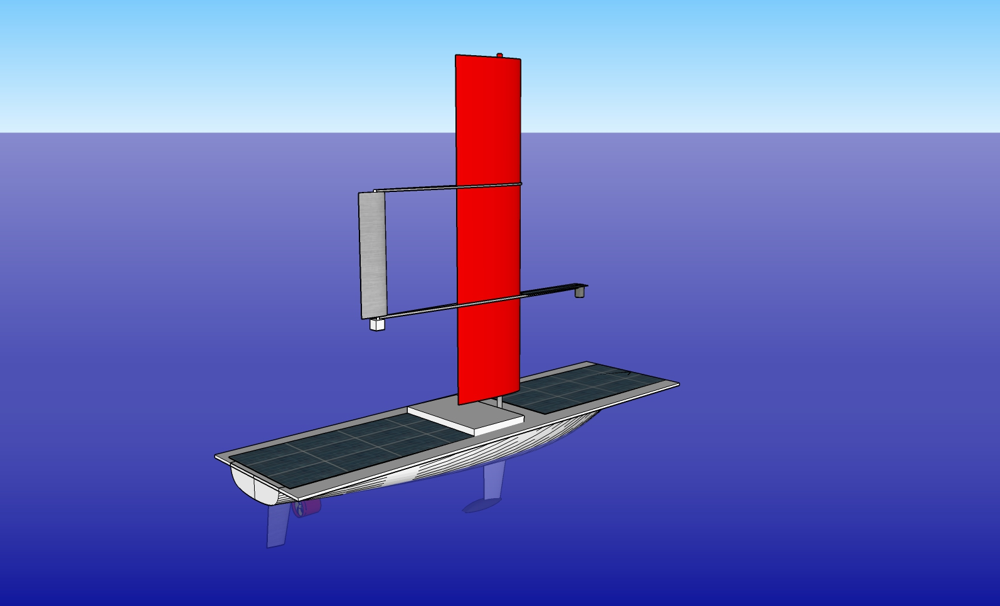

Solar and Wind Powered USV "Raider 2"
Raider 2 is an ultralight solar and wind powered unmanned surface vehicle (USV) that currently is being built by Envirover.
ArduPilot based autopilot supports waipoints guidance, sensor based guidance, and station keeping. It is equipped with Iridium satellite shirt burst data (SBD) transceiver for long-range, 915 Mhz radio-telemetry transciver for short-range, and cellular data modem for close to shore communications.
The USV can accomodate up to 20 lbs. of custom, mission-dependent load, such as additional sensors, winches, or gimbals.
Specification
| Displacenemt: | 120 lbs. |
| Length Overall: | 8.75 ft. |
| Beam: | 2.5 ft. |
| Draft: | 2 ft. |
| Disassembled Dimensions: | 9 x 2.5 x 1.5 ft. |
| Wing Sail Area: | 9 ft.³ (1.5 x 6 ft.) |
| Solar Panels: | 2 x 100 Watt |
| Battery: | Lithium-ion, 500 Watt-hours |
| Engine Max Power: | 130 Watts |
| Top Speed Under Engine: | 3.5 Knots |
| Cruise Speed Under Engine: | 2 Knots |